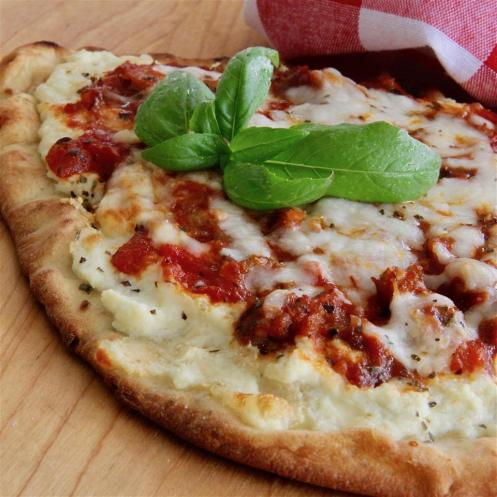

Lasagna Pizza

A fully prepared Lasagna
Try this quick to make Lasagna
Ingredients
- 1 (15 ounce) container ricotta cheese
- 1 (8 ounce) package shredded mozzarella cheese, divided
- 1 (3 ounce) package Pamesan cheese
- 1 egg
- 2 teaspoon Italian seasoning
- 1 pound sausage
- 1/2(26 ounce) jar marinara sauce
- 6 flatbreads
Directions
- Heat a large skillet over medium-high heat. Cook and stir beef in
in the hot skillet until browned and crumbly, 5 to 7 minutes
- Season beef with onion powder, garlic salt, celery salt and cumin. Pour
tomato sauce over the beef, stir to coat and simmer until thickened, slightly
about 5 minutes